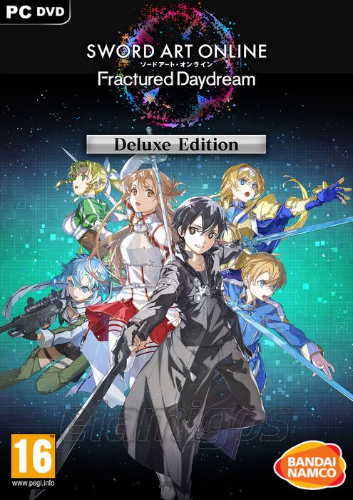

Sword Art Online Fractured Daydream 39.4GB
Género: JRPG
En este juego de acción cooperativo en línea, sumérgete en una versión
distorsionada del mundo de SWORD ART ONLINE. Elige tu rol a través de
tus personajes favoritos de SWORD ART ONLINE y forma equipo con 20
jugadores en incursiones para derrotar a poderosos enemigos.